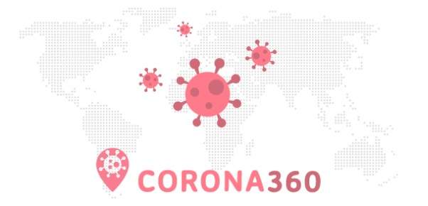
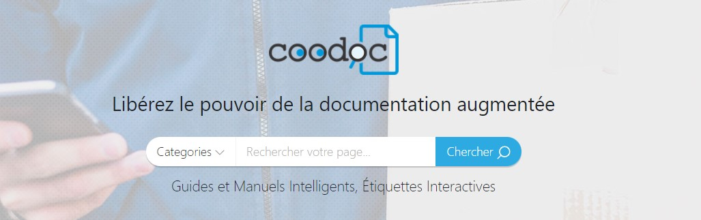
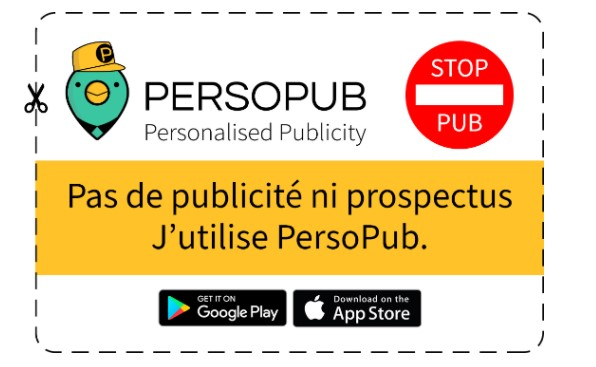

Toussi Investissement et innovation
TOUSSI INVESTMENT ET INNOVATION, société par actions simplifiée, est active depuis 4 ans. Installée à PALAISEAU (91120), elle est spécialisée dans le secteur d'activité du conseil pour les affaires et autres conseils de gestion. Monsieur Massoud
TOUSSI est le gérant de cette entreprise et MD, Ph.D., MBA est médecin et spécialiste en intelligence artificielle et en data science ! j'ai l'honneur de travailler avec lui , car cette personne m'a raconté son histoire et il a essayé de me
donner la bonne direction !(me donner des conseilles). Je dois ajouter qu'il est partisan de la protection de l'environnement et de l'environnement urbain de la pollution plastique et en particulier de l'abattage des arbres.
Pourquoi est ce que je vous l'ai décrit?
Parce que 2 de ses 4 projets sont dans le domaine de la sécurité environnementale et de la réduction de l'impression papier et de l'abattage des arbres .1 de reste était sur le Coronavirus et le derinier était un site de vente en ligne
Les projets et les Staffs
* Corona 360 *

Cette application gratuite offre une solution contre la propagation du Covid-19 qui a montré son efficacité en Corée du Sud.
Donc vous pouvez déclarer en cas d'etre affecté par Covid pour protéger les autres autour de vous.Donc avec cette
application , c'est possible de connaitre des zones qui ont plus de personnes affectés.
Cette application est téléchargeable sur AppleStore et GooglePlay
* Coodoc.com *

Coodoc est le premier projet qui est publié pour lutter contre la surconsommation de papier ; par exemple, imaginer quand vous achetez un nouveau lave-linge et dans sa boite , il y a 100 page de manuels d'utilisation en 5 langues et vous lisez
maximum 5 pages de ce livret et habituellement, ce livret ne sera plus utile , car vous avez déja lu et compris les informations que vous aviez besoin! le projet 'Coodoc.com' est là pour permettre aux entreprises de créer leurs pages et de
mettre les infos sur leurs produits sur le site .En plus , ce site crée automatiquement des Codes à barres et des entreprises peuvent juste les mettre sur/dans les boites de leurs produits , au lieu de mettre un livret de 100 pages qui a causé
des dommages à l'environnement. ce projet est international et plus de 20 personnes sont en train de faire la commercialisation et sont en contact avec les grandes entreprises . des cuncurents dans ce marché sont Wix.com , beaconstac.com,
qrcode-tiger.com ,etc qui ont eu les memes idées .
* PersoPub *

"Persopub" est une application de mobile de partage des pubs pour des commercants autour de la France ( et plus tot le monde !) . l'idée de cette application vient des prospectus que nous recevons tous les jours dans notre boîte aux lettres et
la plupart du temps nous les jetons car ils ne nous intéressent pas ! mais on a quand même envie de les recevoir , car on se dit qu'un jour on trouvera peut être une annonce intéressante qui peut être un jour utile .Alors le fondateur de cette
application essaie d'inciter les citoyens et les commerçants à installer cette application et à recevoir et envoyer des annonces ici ! l'intérêt de cette application permet de lutter contre l'abattage d'arbres et la fabrication de papiers
(en France, 21 milliards de prospectus sont publiés et 18 milliards sont directement jetés à la poubelle). De plus, le marketing sera beaucoup moins cher et plus facile pour les commerçants.
Cette application est toujours téléchargeable
sur Googleplay (la vérsion démo) et sera plustot téléchargeable sur et Applestore.